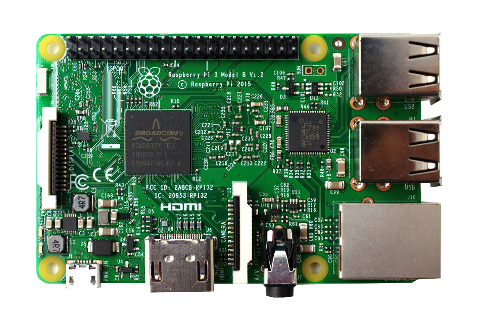

# Less-Pain # Embedded Systems # with Elixir and Nerves ---- LoneStar ElixirConf - 2018-02-22 Greg Mefford (@ferggo)  <!-- .element: class="plain" style="height: 4em" -->  <!-- .element: class="plain" style="height: 4em" -->
# Code of Conduct 💜 http://lonestarelixir.com/2018/code-of-conduct
# Tentative schedule 🕘 * 7:30 AM - 8:30 AM (1:00) * Registration/Breakfast * 8:30 AM - 10:00 AM (1:30) * Welcome / Overview * Quick Win * Nerves In Depth * 10:00 AM - 10:30 AM (0:30) * Break (and help resolve issues)
# Tentative schedule 🕘 * 10:30 AM - 12:00 PM (1:30) * Scanning Barcodes * Custom Nerves Systems * Elixir Crash Course * 12:00 PM - 1:30 PM (1:30) * Lunch (and Play with `eye` firmware)
# Tentative schedule 🕘 * 1:30 PM - 3:00 PM (1:30) * Logging / Monitoring * Robustness * Refactor and Re-Deploy * 3:00 PM - 3:30 PM (0:30) * Break * 3:30 PM - 5:00 PM (1:30) * Build / Lab time
# For Today * Raspberry Pi Zero W + case * Pi camera v2 * Zero-size camera ribbon cable * Lens adjustment tool * 16 GB class 10 MicroSD card * MicroSD card reader * Male USB to MicroUSB cable * QR codes and Stickers!
# For Later * MicroUSB OTG cable * HDMI to Mini HDMI cable * Standard-size camera ribbon cable * 5V 2.5A MicroUSB AC power adapter * 40-pin header * Heatsink
# Elixir 💜 Embedded Light-weight *concurrency* * Tons of tiny processes * Process-level fault-tolerance * Per-Process Garbage-Collection * Immutable Data Structures Notes: Due to its Erlang roots, Elixir was born to be embedded. Today's low-cost embedded platforms are yesterday's supercomputers, so it's unsurprising that the BEAM would work well there. But I want to talk for a minute about this one-two punch: Garbage-collection happens per-process, and data structures are immutable.
# Elixir 💜 Embedded *Binary* pattern-matching ``` elixir def decode(<<op::3, addr::6, data::7>>), do: {op, addr, data} # ... decode(<<0b01010101, 0b01010011>>) # => {2, 42, 83} ``` Notes: Another thing that's really great about Elixir for embedded development is binary pattern-matching. Let's pretend that we have an data sheet for an electronics component that says we need to decode these 16 bits into * a 3-bit operation code, * a 6-bit address value, * and a 7-bit data value. It's really easy to just pattern-match like this, and you're done.
# Elixir 💜 Embedded *Binary* pattern-matching ``` elixir def decode(<<0::2, op::1, addr::9, data::4>>), do: # ... def decode(<< op::3, addr::6, data::7>>), do: # ... # ... decode(<<0b00010101, 0b01010011>>) # => {0, 341, 3} decode(<<0b01010101, 0b01010011>>) # => {2, 42, 83} ``` Notes: But oh, by the way, the data sheet also says that if the first two bits are zeros, then you're in "extended address" mode, so you should interpret the rest of the data as: * a 1-bit operation code, * a 9-bit address value, * and a 4-bit data value. No problem, just add another function head. This example is obviously contrived, but it's so nice to be able to do this instead of procedural bitwise operations.
 <!-- .element: class="plain" style="height: 6em" --> Craft and deploy bulletproof embedded software in Elixir Notes: But I don't recommend you do that, because that's what Nerves is for.
# Nerves Platform App-level fault-tolerance with *Shoehorn* > Get your boot on! * Configure network * Start management tooling * Format storage partitions * ... Then start your app Notes: We also have Bootloader, which can be used to ensure the device comes up to a known-working state before trying to start your application. This allows for some limited remote diagnostics or firmware update, even if your application fails to start for some reason.
# Nerves Platform App-level fault-tolerance with *Shoehorn* > *Shoehorn* used to be called *Bootloader*. > That was confusing because it's not actually a bootloader.
# Support for *Lots of Targets*  <!-- .element: class="plain" -->  <!-- .element: class="plain" -->  <!-- .element: class="plain" -->  <!-- .element: class="plain" -->  <!-- .element: class="plain" -->  <!-- .element: class="plain" --> Notes: Nerves currently supports a bunch of popular and readily-available target hardware, like the Raspberry Pi and Beaglebone families, and the Lego EV3, which is really neat.
# Nerves 💜 Elixir ```bash $ mix nerves.new # Generate a Project $ mix deps.get # Download Pre-Compiled Infrastructure $ mix firmware # Cross-Compile your Project $ mix firmware.burn # Burn your SD card # ... or ... $ mix firmware.push # Update your Firmware over the Network ```
# Phoenix 💜 "IoT"  <!-- .element: class="plain" style="height: 12em" --> Notes: Next, let's talk about Phoenix. This is your server on IoT.
Avoid hard CS problems if you can  <!-- .element: class="plain" style="height: 10em" --> <br/> [Gary Rennie - The Road to 2 Million Websocket Connections in Phoenix](https://youtu.be/c6JcVwbOGXc) <!-- .element: class="attribution" --> Notes: It turns out that Phoenix is pretty good at handling that without much special tuning or architecture. In this presentation, Gary describes how they were able to get a single server to host 2M websocket connections. That wasn't the limit of what's possible, it was more of an arbitrary point at which they ran out of time and motivation to keep going with the test.
Use all your
Cores
4 Cores

96 Cores / 192 Threads
# Pretty secure by default  <!-- .element: class="plain" style="height: 10em" --> [Griffin Byatt - Plugging the Security Holes in Your Phoenix Application](https://youtu.be/w3lKmFsmlvQ) <!-- .element: class="attribution" --> Notes: Phoenix is also pretty secure by default. In this presentation, Griffin presented his findings from analyzing a lot of Phoenix-based web applications in the wild. My main take-away from his presentation was that, unless you're doing something unusual, Phoenix has your back and does the right thing by default.
# Embedded web server (configuration, HMI, API)  <!-- .element: class="plain" style="height: 11em" --> Notes: Phoenix also makes a great embedded web server, whether you need a configuration page, a human-machine interface, or just a JSON API.
# Phoenix Channels  <!-- .element: class="plain" style="height: 12em" --> Notes: Phoenix Channels also offer a great way to easily connect your devices to a server, whether it's an app running in a browser or a headless sensor device in the field.
# GraphQL Subscriptions  <!-- .element: class="plain" style="height: 10em" --> <br/> [Live APIs with GraphQL Subscriptions - Bruce Williams and Ben Wilson](https://youtu.be/PEckzwggd78) <!-- .element: class="attribution" --> Notes: I'm also really interested the GraphQL Subscriptions feature that Bruce and Ben demoed at ElixirConf this year, but I haven't had a chance to try it yet.
## Have Fun with Nerves! 💜  <!-- .element: class="plain" style="height: 6em" -->  <!-- .element: class="plain" style="height: 6em" --> Greg Mefford (@ferggo)